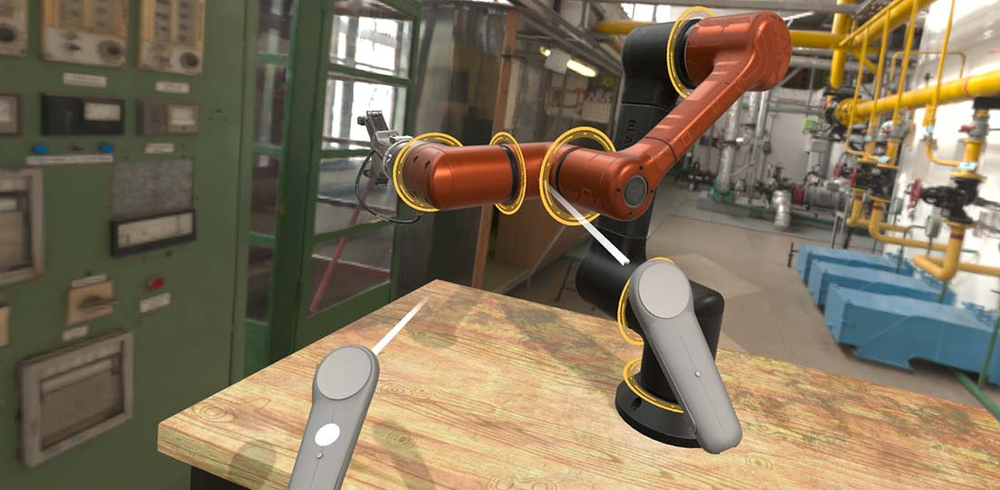

OpenVR

OpenVRPlatform is the XRPlatform implementation for SteamVR, in the Evergine.OpenVR package. It talks to SteamVR through Valve's OpenVR API instead of OpenXR, which gives it access to every device SteamVR tracks: headsets, controllers, Vive trackers and base stations, each with its SteamVR render model.
Use it when you need those extra devices. For a headset and its controllers alone, prefer OpenXR: SteamVR is also an OpenXR runtime, and OpenXR has a project template and runs on more headsets.
What OpenVRPlatform provides
| Subsystem | Support |
|---|---|
| Head tracking and stereo rendering | Yes. It also updates XRPlatform.TrackingState, which OpenXR does not. |
InputTracking |
Every SteamVR device: HMD, Controller, GenericTracker, TrackingReference and DisplayRedirect. Track them with AdvancedTrackXRDevice. |
RenderableModels |
The SteamVR render model of each device, for XRDeviceRenderableModel. |
| Articulated hands | No. |
Passthrough |
No (null). |
Controllers report their state through XRControllerGenericState like on OpenXR, with this mapping from SteamVR buttons:
| Field | SteamVR input |
|---|---|
ThumbStick |
Axis 0: the thumbstick, or the touchpad on Vive wands. |
Trigger |
Axis 1: the trigger value. |
ThumbStickButton |
Touchpad or thumbstick click. |
TriggerButton, Grip, Menu |
Trigger, grip and application menu buttons. |
Button1 |
The A button. |
Button2 |
Not mapped: always Released. |
Properties
| Property | Default | Description |
|---|---|---|
| OpenVRApplicationType | EVRApplicationType.VRApplication_Scene |
The kind of SteamVR application to start as. VRApplication_Scene renders into the headset. Other values, such as VRApplication_Background, only make sense together with SkipHMD. |
| SkipHMD | false |
Starts OpenVR without rendering into the headset: no Display is created and the camera is not moved. Device tracking keeps working, for example to drive a desktop application with Vive trackers. |
| MSAASampleCount | Count4 |
Multisampling of the headset render targets. Higher than on the other platforms. |
OpenVRPlatform also inherits the XRPlatform properties: MirrorDisplay, RenderMirrorTexture, NearClipDistance and FarClipDistance.
Set up a Windows profile
Important
Evergine does not include an OpenVR project template. Start from a Windows (DirectX11) profile, add the Evergine.OpenVR package to its launcher project, and make the changes below. SteamVR must be installed on the PC.
The setup follows the same steps as OpenXR, with one difference: OpenVRPlatform creates its Display when the service attaches, which happens inside application.Initialize(), not when you register it. The launcher registers the platform and the mirror window, and the application registers the headset display as soon as it exists.
In the launcher's Program.cs, create a DirectX 11 context, then the platform:
using Evergine.Common.Graphics;
using Evergine.Framework;
using Evergine.Framework.Graphics;
using Evergine.Framework.Services;
using Evergine.OpenVR;
class Program
{
private static OpenVRPlatform openVRPlatform;
// Main() stays as in the template: it creates the window, calls this method and runs the frame loop.
private static void ConfigureGraphicsContext(Application application, Window window)
{
GraphicsContext graphicsContext = new global::Evergine.DirectX11.DX11GraphicsContext();
graphicsContext.CreateDevice();
SwapChainDescription swapChainDescription = new SwapChainDescription()
{
SurfaceInfo = window.SurfaceInfo,
Width = window.Width,
Height = window.Height,
ColorTargetFormat = PixelFormat.R8G8B8A8_UNorm_SRgb,
ColorTargetFlags = TextureFlags.RenderTarget | TextureFlags.ShaderResource,
DepthStencilTargetFormat = PixelFormat.D32_Float_S8X24_UInt,
DepthStencilTargetFlags = TextureFlags.DepthStencil,
SampleCount = TextureSampleCount.None,
IsWindowed = true,
RefreshRate = 60,
};
var swapChain = graphicsContext.CreateSwapChain(swapChainDescription);
application.Container.RegisterInstance(graphicsContext);
// The desktop window shows a copy of what the headset renders.
var mirrorDisplay = new Display(window, swapChain);
// Set MirrorDisplay before registering: the platform reads it when it attaches.
openVRPlatform = new OpenVRPlatform()
{
MirrorDisplay = mirrorDisplay,
};
application.Container.RegisterInstance(openVRPlatform);
var graphicsPresenter = application.Container.Resolve<GraphicsPresenter>();
graphicsPresenter.AddDisplay("MirrorDisplay", mirrorDisplay);
}
}
In the frame loop, call openVRPlatform.Update() before application.UpdateFrame(gameTime), as the OpenXR templates do.
In MyApplication.Initialize(), register the headset display between base.Initialize() and the navigation to the first scene. The check keeps the code harmless in profiles that registered their own DefaultDisplay, such as the OpenXR ones:
public override void Initialize()
{
base.Initialize();
// OpenVRPlatform creates its display when the service attaches, inside base.Initialize().
// Register it before the scene loads, so that the scene camera finds it.
var graphicsPresenter = this.Container.Resolve<GraphicsPresenter>();
var xrPlatform = this.Container.Resolve<XRPlatform>();
if (xrPlatform?.Display != null && !graphicsPresenter.TryGetDisplay("DefaultDisplay", out Display _))
{
graphicsPresenter.AddDisplay("DefaultDisplay", xrPlatform.Display);
}
// Get ScreenContextManager
var screenContextManager = this.Container.Resolve<ScreenContextManager>();
var assetsService = this.Container.Resolve<AssetsService>();
// Navigate to scene
var scene = assetsService.Load<MyScene>(EvergineContent.Scenes.MyScene_wescene);
ScreenContext screenContext = new ScreenContext(scene);
screenContextManager.To(screenContext);
}
See also
- XR Platform: the properties every platform shares.
- Advanced Tracking Devices: tracking trackers and base stations.